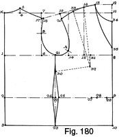
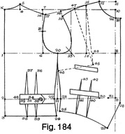
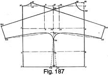

Early 1940's—Ladies' Garment Cutting and Making
by
F. R. Morris
Chapter XIV—Blouses, Waistcoats, Magyars and Capes
BLOUSES
IN recent seasons the blouse has had a renewed popularity owing to the advent of the very popular sportswear suits combining three-quarter or jacket length coat and skirt with a blouse or jumper to give colour contrast. Modern blouses are far removed from the "shirt blouse" style; instead of that shapeless creation they are feminine in design with draped collars and "puff" sleeves, trimmed with edgings of pleating and generally much more fitting to the figure.
Very often blouses can be cut from the dress basis system to satisfy all the requirements of ease, and the fitting waistcoat styles, worn outside the skirt at the waist and fastening down the fronts with buttons, are definitely cut as close in fit as a dress.
The basic drafts for blouses will indicate the cutting of both close- and loose-fitting designs to cover the subject completely. The basis for loose-fitting blouses will be given first.
Basic Draft for Loose-fitting Blouses (Fig. 179)
Constructed to the measurements as follows, the system does not allow for seams; all parts are cut net.
- Chest = 34 inches.
- Bust =36 inches.
- Waist = 27 inches.
- Natural waist length = 15 inches.
- Half-back width = 6½ inches.
- Working scale = one-third of the bust girth plus 6 inches = 18 inches.
To draft—
Square from X.
- 1 from X = the back depth = one-third of the scale plus 1½ inches.
- 2 from X = the natural waist length = 15 inches.
- 3 from 2 = 5 inches allowance for ease and tucking under the skirt waistband.
- Square out from the above points.
- 4 from X = the back neck width = one-sixth of the scale less ¼ inch.
- Square up from 4 to 5 the height of the back neck point, i.e. ¾ inch.
- Shape the back neck curve from 5 to X.
- 6 from 1 = the half-back width plus ½ inch for ease.
- Square up from 6 to 7 on the construction line squared from X.
- 8 from 1 = the half-bust measure plus 2 inches for ease.
- Square down from 8 to 9 and 10 on the lines from 2 and 3.
- Square up from 8 to 11 on the line squared out from X.
- 12 from 11 = one-twelfth of the scale.
- Square back from 12 to 13 one-sixth of the scale.
- The across-chest width from 8 to 14 = half the scale less ½ inch.
- The addition of ½ inch to the across-chest width in variation with the dress basis draft is made for a draped effect at the front of the armhole and to give extra width across the chest for ease of movement of the arms.
- 15 from 14 = one-sixth of the scale plus ¼ inch.
- The addition of ¼ inch to this quantity is explained by the increase of the across-chest width subsequently affecting this point.
- 16 from 15 = the distance from 8 to 12 less ½ inch.
- 17 is located on the line squared from 6 to 7.
- 17 from 7 = 1 inch.
- 18 from 17 = ¼ inch.
- Shape the back shoulder seam from 18 to 5 as shown.
- Join 16 to 18.
- 19 from 16 = the back shoulder width from 5 to 18 less ½ inch for back shoulder seam ease.
- Square down from 19 to 20 1 inch.
- Shape the front shoulder seam from 20 to 16.
- The sideseam is located at midway of the armhole between 6 and 14 at 21.
- Shape the front scye as shown, hollowing ¼ inch in advance of the line from 14 when shaping from 20 to 21.
- Shape from 21, to 18 as shown.
- Square down from 21 to 22 and 23 on the lines from 2 and 3.
- 24 from 23 = 1 inch.
- 25 from 23 = 1 inch.
- Shape the sideseams from 21 to 24 and 25, overlapping as indicated.
- 26 from 21 = the position of the underarm sideseam dart = one-sixth of the scale from 21.
- 27 is midway of 14 to 8.
- 28 from 27 = 2 inches.
- 29 from 16 = the distance from 16 to 13.
- Mark the bust dart line from 26 to 28 and shape out the shoulder dart from 28 to 16 and 29.
- For a round neck line, 30 from 12 = one-sixth of the scale for the size of the neck opening.
- Shape from 30 to 13.
- For a V-neck opening make the distance from the back neck X to the front opening at 31 equal to half the total neck opening of 22 inches.
This completes the basic draft for loose-fitting blouses, and the draft for close-fitting blouses and fancy waistcoats will be given next.
Basic Draft for Close-fitting Blouses (Fig. 180)
Measurements for this draft are as for the loose-fitting basis draft.
To draft—
Square from X.
- 1 from X = the back depth = one-third of the scale plus 1½ inches.
- 2 from X = the natural waist length = 15 inches.
- 3 from 2 = 5 inches. Square out from the above points.
- 4 from X = the back neck width = one-sixth of the scale less ¼ inch.
- Square up from 4 to 5 the height of the back neck curve, i.e. ¾ inch.
- Shape the back neck curve from 5 to X.
- 6 from 1 = the half-back width net = 6½ inches.
- Square up from 6 to 7 on the construction line squared out from X.
- 8 from 1 = the half-bust measure plus 1 inch for ease.
- Square down from 8 to 9 and 10 on the waist and hip lines.
- Square up from 8 to 11 on the line squared from X.
- 12 from 11 = one-twelfth of the scale.
- 13 from 12 = one-sixth of the scale.
- The across-chest width from 8 to 14 = half the scale less 1 inch as described in the dress basis draft.
- 15 from 14 = one-sixth of the scale less ¼ inch.
- 16 squared up from 15 = the distance from 8 to 12 less ½ inch.
- 17 is located on the line squared from 7 to 6.
- 17 from 7 = 1 inch.
- 18 from 17 = ¼ inch. Shape the back shoulder seam from 18 to 5 as shown.
- Join 16 to 18.
- 19 from 16 = the back shoulder width from 18 to 5 less ½ inch.
- Square down from 19 to 20 1 inch.
- Shape the front shoulder seam from 20 to 16.
- The sideseam is located at 21, midway of 6 to 14.
- Square down from 21 to 22 and 23 at the waist line and hip line respectively.
- Shape the scye from 20 to 21 and 18, hollowing ¼ inch in advance of the line squared up from 14.
- 25 from 22 = ½ inch.
- 26 from 22 = ½ inch.
- Shape the sideseams from 21 to 25 and 23 and from 21 to 26 and 23.
- Measure from 2 to 27 half the waist size (27 inches plus 3 inches for ease).
- 28 from 27 = the distance from 25 to 26.
- 29 from 28 = the quantity taken out in darts or panel seams from the back waist = two-thirds of the distance from 28 to 9.
- From 29 to 9 is taken out at the front waist under the bust for suppression.
- 30 from 21 = the position of the sideseam dart = one-sixth of the scale down from 21.
- 31 is midway of 8 to 14.
- 32 from 31 = 2 inches.
- Mark the sideseam dart line from 30 to 32.
- Shape out the shoulder dart from 32 to 16 and 33, making the distance from 16 to 33 equal to 13 to 16.
- The round neck opening from 12 to 34 = one-sixth of the scale.
- Shape from 34 to 13.
- For a V-neck opening, make the distance from the back neck X to the front opening at 35 equal to half the total neck opening of 22 inches.
- Shape from 35 to 13 to complete the draft.
For the purpose of familiarizing the reader with the working-out of the system as applied to style-reading, the following drafts will illustrate typical blouse designs as now worn which may be taken as perennial styles.
Blouse with a Yoke Front and Back (Fig. 181)
The blouse depicted by Fig. 181 has an inset yoke at the front and a straight yoke across the back shoulders. The blouse fastens down the fronts with holes and buttons, and the draft illustrates the correct allowances to be made for the opening to permit the buttons to run centrally down the front.
The basic system of this draft is the loose-fitting method illustrated by Fig. 179.
Measurements for the draft are as follows—
- Chest = 34 inches.
- Bust = 36 inches.
- Natural waist length = 15 inches.
- Half-back width = 6½ inches.
- Working scale = one-third of the bust girth plus 6 inches = 18 inches.
To draft—
Square from X.
- 1 from X = the back depth = one-third of the scale plus 1½ inches.
- 2 from X = the natural waist length = 15 inches.
- 3 from 2 = 5 inches.
- 4 from X = the back neck width = one-sixth of the scale less ¼ inch.
- 5 from 4 = the back neck height = ¾ inch.
- Shape the back neck curve from 5 to X.
- 6 from 1 = the half-back width plus ½ inch for ease = 7 inches.
- Square up from 6 to 7 on the line squared out from X.
- 8 from 1 = the half-bust measure plus 2 inches.
- Square down from 8 to 9 and 10 on the lines from 2 and 3.
- Square up from 8 to 11 the distance from X to 1.
- 12 from 11 = one-twelfth of the scale.
- 13 squared back from 12 = one-sixth of the scale.
- 14 from 8 = the across-chest width = half the scale less ½ inch.
- 15 from 14 = one-sixth of the scale plus ¼ inch.
- Square up from 15 to 16 the distance from 8 to 12 less ½ inch.
- 17 from 7 on the line from 7 to 6 = 1 inch.
- 18 from 17 = ¼ inch.
- Shape the back shoulder seam from 18 to 5.
- Join 16 to 18.
- 19 from 16 = the front shoulder width equal to the back shoulder width from 5 to 18 less ½ inch.
- Square down from 19 to 20 1 inch.
- Shape the front shoulder seam from 20 to 16.
- Shape the scye as shown, hollowing ¼ inch in front of the scye line up from 14.
- The sideseam of the blouse is located at 21, half the distance from 6 to 14.
- Square down from 21 to 22 and 23.
- 24 from 23 = 1 inch.
- 25 from 23 = 1 inch.
- Shape the sideseams from 21 to 24 and 25.
- 26 is half the distance from 8 to 14.
- Square down from 26 to 27 2 inches.
- 28 from 16 = 16 to 13.
- Shape out the shoulder dart from 27 to 16 and 28.
- 29 from 12 for the neck opening = one-sixth of the scale = 3 inches.
- Shape from 29 to 13.
- The front yoke terminates 3 inches above the waist line at 30.
- 31 from the breast line = 3½ inches and 3 inches back from the centre line from 8 to 29.
- 32 from 14 = 4 inches.
- Shape the yoke shoulder seam from 31 to 30 and from 31 to 32, breaking at the shoulder dart lines as indicated at 33 and 34.
- 33 from 16 = 34 from 28, and when the shoulder dart is closed out the seam run from 31 to 33, 34 and 32 will be continuous.
- For the front opening, allow ¾ inch from 29 to 35 and 30 to 36.
- Mark the edge from 35 to 36 and then allow an extra 1¼ inches from 35 to 37 and 36 to 38 for the facing-back of the button-stand.
- 39 from 6 = half the back depth from X to 1 for the shape of the back shoulder yoke.
- Square across from 39 to 40 at the centre back.
- After the shoulder dart from 33 and 16 has been closed to 34 and 28 there will be a surplus quantity in the bodice seam from 31 to 32 indicated at 33 to 34. This quantity may be either gathered or tucked out to agree with the length of the shoulder yoke from 31 to 32 or else reduced as indicated by the dash lines from 41 to the front yoke seam running round to 30.
This completes the draft of a blouse with front and back shoulder yokes. A circular collar of the " Peter Pan" type is usually sewn to the neck.
Shirt Blouse with Raised Shoulder Seams (Fig. 182)
As an example of diverting the position of the shoulder seam to allow the front shoulder of the bodice to be gathered into the seam, Fig. 182 shows a blouse design that will always be fashionable. Cut on severe lines, the front neck opening is formed by an inset button-stand and catch similar to those of a sports shirt. The blouse is fairly close-fitting at the waist, and this effect is achieved by means of front and back waist darts and is drafted by the system illustrated by Fig. 180.
Measures for the draft are as follows—
- Chest = 32 inches.
- Bust = 34 inches.
- Waist = 26 inches, increased to 29 inches for the degree of looseness over the tight waist measure.
- Natural waist length = 14½ inches.
- Half-back width = 6¼ inches.
- Working scale = half the bust girth = 17 inches.
To draft—
Square from X.
- 1 from X = the back depth = one-third of the scale plus 1½ inches.
- 2 from X = the natural waist length = 14½ inches.
- 3 from 2 = 5 inches.
- Square out from the above points.
- 4 from X = the back neck width = one-sixth of the scale less ¼ inch.
- 5 from 4 = the back neck height = ¾ inch.
- Shape the back neck curve from 5 to X.
- 6 from 1 = half the back shoulder width net.
- Square up from 6 to 7 on the line squared out from X.
- 8 from 1 = the half-bust measure plus 1 inch.
- Square down from 8 to 9 and 10 on the lines squared out from 2 and 3.
- 11 is squared up from 8 on the line squared out from X.
- 12 from 11 = one-twelfth of the scale.
- 13 squared back from 12 = one-sixth of the scale.
- 14 from 8 = the across-chest width = half the scale less 1 inch.
- 15 from 14 = one-sixth of the scale less ¼ inch.
- Square up from 15 to 16 the distance from 8 to 12 less ½ inch.
- 17 from 7 on the line from 7 to 6 = 1 inch.
- 18 from 17 = ¼ inch. Shape the back shoulder seam from 18 to 5.
- Join 16 to 18.
- 19 from 16 = the front shoulder width equal to the back shoulder width from 5 to 18 less ½ inch.
- Square down from 19 to 20 1 inch.
- Shape the front shoulder seam from 16 to 20.
- Shape the scye as shown, hollowing ¼ inch in front of the scye line squared up from 14.
- The sideseam is located at 21, half the distance from 14 to 6.
- Square down from 21 to 22 and 23 on the waist and hip lines respectively.
- 24 from 22 = ½ inch.
- 25 from 22 = ½ inch.
- Shape the sideseams from 21 to 24 and 23 and from 21 to 25 and 23.
- 26 is half the distance from 14 to 8.
- Square down from 26 to 27 2 inches.
- 28 from 16 = 16 to 13.
- Shape out the shoulder dart from 16 and 28 to 27 as shown.
- The neck opening is made one-sixth of the scale from 12 to 29.
- Mark back ¾ inch from 29 to 30 and shape from 30 to 13.
- The front opening is made 10 inches in length from 29 to 31.
- Mark back from 31 to 32 ¾ inch as indicated.
- 33 from 31 = 31 to 32.
- 34 from 29 = ¾ inch. Shape from 33 to 34.
- This strapping is cut treble and sewn to the front in exactly the same manner as the opening on a sports shirt.
- Measure from 2 to 35 half the waist size (29 inches).
- 36 from 35 = the quantity of suppression reduced from the sideseam at 24 to 25.
- The back dart suppression takes two-thirds of the surplus from 36 to 9.
- The front dart takes the remaining one-third from 37 to 9.
- 38 from 2 = 3½ inches.
- 39 from 38 = the back waist suppression indicated from 36 to 37.
- 40 from 38 and 39 = 6 inches.
- 41 from 3 = 4 inches.
- Shape out the back waist dart from 41 to 38, 39 and 40, suppressing ½
inch at 41.
- The dart is without a seam allowance, so that it must be sewn out as marked or, alternatively, a seam is cut inside the lines from 41 to 38, 39 and 40.
- 42 from 9 = 3½ inches.
- 43 from 42 = the front waist suppression, as indicated from 37 to 9.
- 44 from 43 and 42 = 4 inches.
- Shape out the waist dart from 42 and 43 to 44 and 45 at the bottom edge line.
- Sew out the dart in the marks.
- The reconstruction of the shoulder section takes place by transferring the back shoulder seam 1½ inches more forward over the shoulder.
- 46 from 13 = 2 inches.
- 47 from 16 = 2 inches.
- 48 from 28 = 2 inches.
- 49 from 20 = 2 inches.
- Shape from 46 to 47, 48 and 49, and then cut this section of the shoulder away from the front bodice and place it in position against the back shoulder seam from 18 to 5 as indicated by points 50 and 51 and the dash lines.
- The quantity indicated from 47 to 48 is gathered in to the shoulder seam from 50 to 51.
This completes the draft of a shirt blouse.
WAISTCOATS
Double-breasted Blouse Waistcoat (Fig. 183)
Fig. 183 illustrates the draft of a double-breasted blouse waistcoat cut to waist length and finished with a narrow waistband fastening with a hole and button.
The lapels are single-breasted in shape and finished with a tailored collar. Front and back darts suppress the blouse to the waist, and the shoulder dart is eliminated to provide for a sideseam dart under the arms.
Measures for the draft are as follows—
- Chest = 30 inches.
- Bust = 32 inches.
- Waist = 26 inches, increased to 28 inches for the degree of ease required.
- Natural waist length = 14¼ inches.
- Working scale = half the bust girth = 16 inches.
To draft—
Square lines from. X.
- 1 from X = the back depth = one-third of the scale plus 1½ inches.
- 2 from X = the natural waist length = 14¼ inches.
- 3 from 2 = 1 inch for a slightly pouched effect.
- 4 from X = the back neck width = one-sixth of the scale less ¼ inch.
- 5 from 4 = the height of the back neck curve = ¾ inch.
- Shape from 5 to X for the back neck curve.
- 6 from 1 = the half-back width = 6¼ inches applied net.
- Square up from 6 to 7 on the line from X.
- 8 from 1 = the half-bust measure plus 1 inch.
- Square down from 8 to 9 and 10 on the lines squared out from 2 and 3.
- Square up from 8 to 11 equal to the distance from X to 1.
- 12 from 11 = one-twelfth of the scale.
- 13 squared back from 12 = one-sixth of the scale.
- 14 from 8 = half the scale less 1 inch.
- Square up from 14 to the line squared out from X.
- 15 from 14 = one-sixth of the scale less ¼ inch.
- Square up from 15 to 16 equal to the distance from 8 to 12 less ½ inch.
- 17 from 7 on the line from 7 to 6 = 1 inch.
- 18 from 17 = ¼ inch. Shape the back shoulder seam from 18 to 5.
- Join 16 to 18.
- 19 from 16 = the front shoulder width equal to the back shoulder width from 18 to 5 less ½ inch.
- 20 from 19 = 1 inch.
- Shape the front shoulder seam from 20 to 16 as indicated.
- Shape the scye, hollowing ¼ inch in advance of the scye line squared up from 14.
- The sideseam is located at 21, half the distance from 14 to 6.
- Square down from 21 to 22 and 23.
- 24 from 22 = ½ inch.
- 25 from 22 = ½ inch.
- Shape the sideseams from 21 to 24 and 25, continuing to 26 and 27 on the bottom edge line from 3 to 10.
- Measure from 2 to 28 half the waist measure plus the distance from 24 to 25.
- The back waist suppression takes two-thirds of the surplus from 28 to 9, and the front waist suppression takes the remaining third from 29 to 9.
- 30 from 2 = 3½ inches.
- 31 from 30 = the suppression quantity as indicated from 28 to 29.
- Square down from 30 and 31 to 32 and 33.
- 34 from the waist line for the dart length = 6 inches.
- Shape out the back waist dart from 32 and 33 to 30, 31 and 34.
- The dart is sewn in the marks indicated or, if cut out, a seam must be allowed as shown by the dash lines, and the dart gradually tapered away.
- 35 from 9 = 3½ inches.
- 36 from 35 = the front waist suppression quantity as shown from 9 to 29.
- 37 from 35 and 36 = 3½ inches.
- 38 from 10 = ¾ inch.
- Shape from 38 to 27 to locate the termination of the front dart at points 39 and 40.
- Shape out the front waist dart as shown from 39 and 40 to 35, 36 and 37.
- Add 3 inches from the centre line to 41 and from 38 to 42 for the double-breasted overlap and shape from 42 to 38.
- 43 from 13 = ¾-inch collar stand.
- Line the crease of the lapel from 43 to 41.
- 44 from 12 = one-sixth of the scale.
- 45 from 13 = 1½ inches.
- Join 45 to 44, and continue out to 46 the width of lapel required.
- Shape the gorge run from 46 to 13 and the lapel edge from 46 to 41.
- 47 is half the distance from 8 to 14.
- Square down from 47 to 48 2 inches.
- 49 from 21 = the position of the sideseam dart = one-sixth of the scale from 21.
- 50 from 16 = 16 to 13.
- Join 49 to 48 and shape out the bust dart from 48 to 16 and 50.
- Manipulate the shoulder dart in the usual manner to produce the sideseam dart by closing 16 to 50 to open the sideseam at 49, pivoting from 48. Mark the dart so obtained 3½ inches in length and sew out in the marks.
The draft of the double-breasted waistcoat is completed by drafting the waistband equal in length to the seam from 3 to 42 after the darts have been sewn out, and in width 1½ inches plus seams.
The collar for this draft is constructed as described for single-breasted lapels in the chapter on Collar Cutting.
Single-breasted Waistcoat Draft (Fig. 184)
The single-breasted waistcoat drafted in Fig. 184 is very useful for wearing with any two-piece suit. It has a circular collar and plain one-piece sleeves with buttons fastening the fronts down to cut-away points similar to a man's single-breasted waistcoat. Four welt pockets are incidentals, and the waist suppression is achieved by two darts at the front and back and a slotted belt running across the back waist from sideseam to sideseam.
Measures for the draft are as follows—
- Chest = 32 inches.
- Bust = 34 inches.
- Waist = 26 inches, increased to 28 inches for ease.
- Natural waist length = 14½ inches.
- Waistcoat length from the back neck over the shoulder to the front point = 23 inches.
- Half-back width = 6¼ inches.
- Working scale = half the bust girth = 17 inches.
To draft—
Square lines from X.
- 1 from X = the back depth = one-third of the scale plus 1½ inches.
- 2 from X = the natural waist length = 14½ inches.
- 3 from 2 = the back length from the waist line = 3 inches.
- Square out from the above points.
- 4 from X = the back neck width = one-sixth of the scale less ¼ inch.
- 5 from 4 = the height of the back neck curve = ¾ inch.
- Shape from 5 to X for the back neck curve.
- 6 from 1 = the half-back width = 6¼ inches net.
- Square up from 6 to 7 on the line squared out from X.
- 8 from 1 = the half-bust measure plus 1 inch.
- Square down from 8 to 9 and up from 8 to 10.
- 11 from 10 = one-twelfth of the scale.
- 12 squared back from 11 = one-sixth of the scale.
- 13 from 8 = half the scale less 1 inch.
- Square up from 13 to the line from X.
- 14 from 13 = one-sixth of the scale less ¼ inch.
- Square up from 14 to 15 the distance from 8 to 11 less ½ inch.
- 16 from 7 on the line from 7 to 6 = 1 inch.
- 17 from 16 = ¼ inch.
- Shape the back shoulder seam from 17 to 5.
- Join 15 to 17.
- 18 from 15 = the front shoulder width equal to the back shoulder width from 5 to 17 less ½ inch.
- 19 from 18 = 1 inch.
- Shape the front shoulder seam from 19 to 15 as shown.
- Shape the scye, hollowing ¼ inch in front of the scye line from 13.
- The sideseam is located at 20, half the distance from 13 to 6.
- Square down from 20 to 21.
- 22 from 21 = ½ inch.
- 23 from 21 = ½ inch.
- 24 from 22 = 3 inches.
- 25 from 23 = 22 to 24 less ½ inch.
- Shape from 24 to 3 and from 24 to 22 and 20 for the back sideseam run.
- Shape from 25 to 23 and 20 for the front sideseam run.
- 29 from 11 = one-sixth of the scale. Shape the neck curve run from 26 to 12.
- 27 from 26 = ¾ inch button stand.
- 28 from 9 = ¾ inch and 1 inch below the waist line.
- Measure the back neck width from 5 to X, place the quantity at 12, and apply the waistcoat length measure from 12 to 29.
- 29 is 1½ inches back from the centre line from 26 to 9.
- Shape the bottom edge run from 29 to 25, hollowing ¾ inch between the two points, and join 29 to 28.
- Measure from 2 to 30 half the waist measure plus the distance from 22 to 23.
- The back waist suppression takes two-thirds of the surplus from 30 to 9 as indicated by point 31 from 30.
- The front waist suppression takes the remaining surplus from 31 to 9.
- 32 from 2 = 3½ inches.
- 33 from 32 = half the quantity shown at 30 to 31.
- 34 from 33 = 1 inch.
- 35 from 34 = half the quantity shown from 30 to 31.
- 36 and 37 are each 5 inches from the waist line for the length of the darts.
- 38 and 39 are squared down from the waist line.
- Shape out the two back darts as shown.
- 40 from 9 = 4 inches for the position of the front dart.
- 41 from 40 = 2½ inches.
- 42 from 40 = 3 inches.
- 43 from 41 = 3 inches.
- Shape out the first dart from 40 to 42, suppressing half the quantity shown from 31 to 9.
- Shape out the second dart from 41 to 43, suppressing the remaining half of the distance from 31 to 9, and continue each dart to terminate at the bottom edge from 29 to 25 at the points shown.
- 44 is half the distance from 8 to 13.
- Square down from 44 to 45 2 inches.
- 46 for the position of the sideseam bust dart = one-sixth of the scale from 20.
- 47 from 15 = the distance from 15 to 12.
- Join 46 to 45 for the dart line and shape out the shoulder dart from 45 to 15 and 47 preliminary to manipulation for producing the sideseam dart by closing 15 to 47, this being achieved by cutting through from 46 to 45 and pivoting from this point.
- 48 from 2 = 2½ inches for the position of the slot in the back waist for allowing the belt to pass under from sideseam to sideseam.
The belt is made 1½ to 2 inches in width and is in three parts, being fastened at each sideseam by a hole and button.
Mark the top welt 3½ inches in length and the bottom 4½ inches after the darts have been sewn out.
The darts are sewn out in the marks, and should not be cut but pressed out flat.
Bolero Coatee Draft (Fig. 185)
The following draft illustrates a bolero coatee cut very much on the lines of a uniform mess jacket with roll lapels and a link-button fastening. Though not a blouse, it is worn under a costume jacket and may be classed as a waistcoat. At the back, a side-body seam curves from the shoulder to terminate in a point below the waist in the style of a page-boy's jacket, and this garment may be made without sleeves for wearing over a blouse.
Measures for the draft are as follows—
- Chest = 36 inches.
- Bust = 40 inches.
- Waist = 32 inches, increased to 34 inches for ease.
- Natural waist length = 15½ inches.
- Back length = 19 inches.
- Half-back width = 6¾ inches.
The figure chosen for this draft shows an increased prominence of the bust over the normal 2 inches increase, so that two scales are necessary for drafting the pattern.
Firstly, ascertain the normal bust girth in proportion to the chest size and calculate the scale of the back shoulder section as usual. In this instance, the normal proportion will be based on a 38-inch bust, and the scale one-third of 38 inches plus 6 inches, i.e. 18¾ inches.
The scale for the front shoulder section to provide for the increased bust prominence is based on the actual bust girth of 40 inches; therefore, one-third of the bust (40 inches) plus 6 inches finds the front shoulder scale as 19½ inches.
- Working scale (back) = 18¾ inches.
- Working scale (front) = 19½ inches.
To draft—
Square lines from X.
- 1 from X = the back depth = one-third of the scale (18¾ inches) plus 1½ inches.
- 2 from X = the natural waist length = 15½ inches.
- 3 from X = the full coatee length =19 inches.
- 4 from X = the back neck width = one-sixth of the scale (18½ inches) less ¼ inch.
- 5 from 4 = the height of the back neck curve = ¾ inch.
- Shape the back neck curve from 5 to X.
- 6 from 1 = the half-back width of 6¾ inches net.
- Square up from 6 to 7 on the line squared out from X.
- 8 from 1 = the half-bust measure plus 1 inch.
- Square down from 8 to 9 on the waist line.
- Square up from 8 to 10 one-third of the scale (19½ inches) plus 1½ inches.
- This shows an increase of length to provide for the increased contour capacity of the bust prominence.
- 11 from 10 = one-twelfth of the scale (19½ inches).
- 12 from 11 = one-sixth of the scale (19½ inches).
The next consideration is that of the across-chest width.
The across-chest width for a normal 38-inch bust girth is one-fourth of the bust measure less 1 inch, i.e. 8½ inches.
The across-chest width for a normal 40-inch bust girth is one-fourth of the bust measure less 1 inch, i.e. 9 inches.
The across-chest width of a figure showing a 4-inch increase of bust girth over the actual chest girth is greater than the width for a normal 40-inch bust girth as the increase to 40 inches does not take place proportionately throughout the circumference of the figure; instead, it is greater at the front, as delineated by the half-back width remaining the same as for a 38-inch bust.
On the other hand, the across-chest width does not increase the total increase of the half-bust circumference, namely, 1 inch; otherwise, the scye width would remain the same as for a normal 38-inch bust girth. The author calculates the increase over the normal across-chest width for a 40-inch bust girth to be two-thirds of the difference between the normal width for a 38-inch bust and the normal width for the increase in bust circumference to 40 inches, added to the normal 40-inch bust width.
For clarity, this is indicated on the draft as follows—
- 13 from 8 = the normal across-chest width for a 38-inch bust circumference = 8½ inches.
- 14 from 8 = the across-chest width for the increased bust girth of 40 inches = 9 inches.
- 15 from 14 = two-thirds of the difference shown between 13 and 14.
- 16 from 15 = 3 inches less ¼ inch for all sizes of bust over 36 inches.
- 17 from 16 = the distance from 8 to 11 less ½ inch.
- 18 from 7 on the line from 7 to 6 = 1 inch.
- 19 from 18 = ¼ inch. Shape the back shoulder seam from 19 to 5.
- Join 17 to 19.
- 20 from 17 = the front shoulder width equal to the back shoulder seam from 19 to 5 less ½ inch.
- Square down from 20 to 21 1 inch, and shape the front shoulder seam from 21 to 17.
- Shape the scye as shown, hollowing ¼ inch in advance of the line from 15.
- The sideseam is located at 22, half the distance from 15 to 6.
- Square down from 22 to 23.
- 24 and 25 are each ½ inch from 23.
- The termination of the sidebody seam at the back scye and also the back-sleeve pitch are located at 26, half the back depth from X to 1 up from point 6.
- 27 from 2 = one-eighth of the scale or the width of panel desired.
- 28 from 1 = 1 inch more than 2 to 27.
- 29 from 27 = ¾ inch less than 2 to 3.
- Shape the sidebody seam from 3 to 29 and from 29 to 27, 28 and 26 in a graceful curve.
- Measure from 2 to 30 half the waist measure plus the distance from 24 to 25.
- 31 from 30 = half the distance from 13 to 15 which is reduced below the
bust prominence in the panel seam.
- The surplus quantity shown between 31 and 9 is divided up by the back waist suppression taking two-thirds of the surplus, and the front waist suppression the remaining one-third from 32 to 9.
- 33 from 27 = the back waist suppression equal to the distance from 31 to 32.
- 34 from 33 = 27 to 29 and is ½ inch nearer 29 than 33 is from 27.
- 35 from 25 = 1½ inches.
- 36 from 24 = 1½ inches.
- Shape the sideseams from 35 to 25 and 22 and from 36 to 24 and 22.
- Shape from 35 to 34 and from 34 to 33 and 26, suppressing ½ inch at 28.
- 37 is half the distance from 8 to 15.
- 38 from 17 = ¾ inch.
- 39 from 9 = 4½ inches for the position of the front panel seam at the waist line.
- 40 from 39 = half the quantity shown between 13 and 15.
- 41 from 38 = the distance shown between 17 and 12.
- Shape out the bust dart and panel seams from 38 to 37 and 39 to 44 and from 41 to the bust point 2 inches below 37 and 40 to terminate at 45 on the bottom edge run from 43.
- Add ¾ inch for the front edge from 9 to 42, 1½ inches above the natural waist line.
- 43 from the waist line = 4½ to 5½ inches and 1 inch back from the centre line.
- Shape the bottom edge run from 43 to 44, 45 and 36, breaking at the suppression lines as shown.
- 46 from 11 = one-sixth of the scale. Shape the neck curve from 46 to 12.
- 47 from 12 = ¾ inch collar stand.
- Draw the crease line of the lapel from 47 to 42.
- 48 from 12 = 1½ inches. Line from 48 through 46 to 49, making the width of the lapel to taste.
- Shape the lapel from 42 to 49 and the gorge run from 49 to 46 and 12.
- Take out the remaining third of suppression from the dart at 50 3 inches from the sideseam and 4 inches in length to 51.
- Shape out the dart to the bottom edge at 52 to complete the draft.
The facing for the lapels is cut as indicated in the chapter on Collar Cutting, i.e. in one piece with the collar, and seamed at the centre back neck, whilst the under-collar is cut in the usual manner.
MAGYARS
The Magyar Problem and Its Relation to Blouse Design
The magyar design is an exceedingly popular vogue at all seasons, and in recent months this feature has been very much to the fore of fashion owing to the square-shouldered styles necessitating width about the shoulders.
For dresses and blouses, the magyar cut is intensely feminine and productive of a very chic effect by accentuating with width and drapery about the shoulders the comparative slenderness of a closely-moulded hip line. The author has designed many dresses with the magyar bodice and sleeve and with a perfectly plain skirt, giving an extremely slender effect to the figure. He does not wish to quote film fashions as an example of style, but we know that the finest designers in the dress world are designing for the screen, and he has noticed that the magyar style is featured to a great extent. No doubt it is like many other style features of the old days, and is taking on a new and more fashionable lease of life under modern treatment and cut.
With the improvement in cutting knowledge, many of the styles of our mothers and grandmothers would present an unrecognizable chic effect cut and made by modern methods and also, more important, worn by the typically smart modern woman.
The folds at the front and back of the armhole inseparable from magyar design are welcomed by the wearer these days as part of the attractiveness of the dress, and she would not have them removed to obtain more of a closer-fitting sleeve. A fitting magyar is an impossibility, and rightly so, for the charm of a magyar lies in the draped effect presented by the sleeves when the arms are at the side.
The problem in magyar design is to provide for movement of the arms above the horizontal position when the arms are outstretched from the shoulders. With some magyar designs provision for movement can be allowed by the insertion of what amounts to a "wedge" or "gusset" at the sideseams under the arms, but if a true magyar sleeve and shoulder are required this cannot be achieved.
When designing dresses of this character, the author always endeavours to have a seam running from the shoulders to under the arm at the sideseam where the sleeve terminates, so as to allow extra length in the under-part of the sleeve for movement of the arms. Maybe the result cannot be called a true magyar as defined by the rule that a magyar consists of the bodice and sleeve in one whole piece, but in his opinion the design of the garment is more important than adherence to a standardized idea of what constitutes a magyar. The magyars of the old days were shapeless monstrosities with no redeeming features of design, and the modern idea of adding seams purely for their effect is a feature whereby the ability of the cutter is taxed to the utmost in the interpretation of intricate designing.
In considering the drafting of a magyar base pattern, the first essential is to find the centre of the shoulder to ensure that the shoulder seam of the bodice is in this position; for the centre of the shoulder is exactly the centre shoulder seam of the sleeve, and to balance the sleeve perfectly the sleeve should be divided equally each side of the shoulder seam.
The location of the shoulder seam exactly in the centre of the shoulder applies equally to coats, dresses and blouses and forms the standard variation.
 The Magyar Basis for Blouses
and Other Garments (Fig. 186)
The Magyar Basis for Blouses
and Other Garments (Fig. 186)

To illustrate the magyar basis draft, a blouse bodice is used and the reconstruction of the shoulder section superimposed thereon. Drafted to a 36-inch bust girth, the subsidiary measures are as follows—
- Chest = 34 inches.
- Bust = 36 inches.
- Natural waist length = 15 inches.
- Half-back width = 6½ inches.
- Working scale = half the bust girth = 18 inches.
To draft—
Square from X.
- 1 from X = the back depth = one-third of the scale plus 1½ inches.
- 2 from X = the natural waist length = 15 inches.
- 3 from 2 = 5 inches for the full length from X.
In the drafting of magyars, the half-back width is of little importance, but, to prevent any misunderstanding, the construction line is indicated.
- 4 from 1 = the half-back width plus ½ inch as for blouses.
- Square up from 4 to 5 on the construction line from X.
- Square out from 1 to 6 half the bust measure plus 2 inches.
- This allowance of 2 inches over the half-bust measure is the standard addition for loose-fitting blouses.
- Square down from 6 to 8 and 9 and up from 6 to 7 on the line squared out from X.
To locate the centre of the shoulder to make the sleeve exactly balanced, the position of the back neck curve must be considered with the location of the front neck point and the height of the front shoulder neck point from the breast line. The addition of 3/8 inch to the height of the back shoulder and a reduction of 3/8 inch from the front shoulder neck-point height locate the centre of the shoulder in the draft for a 36-inch bust girth. Practically speaking, the centre of the shoulder is located by the difference between the height of the back neck point and the height of the front neck point from the breast line when the back and forepart are laid together. The height of the back neck point from the neck balance line is always ¾ inch for dresses and blouse drafts and 1 inch for coats, while the front neck point is always one-twelfth of the scale above the same neck balance line. Therefore, the centre of the shoulder must be half the difference between ¾ inch and one-twelfth of the scale above the neck construction line. The raising of the back neck point necessitates an increase in the width of the back neck curve and a reduction in the width of the front neck curve. An addition of 1/8 inch to the back neck curve width and 1/8 inch reduction of the front neck curve width are made.
- Therefore, 10 from X = one-sixth of the scale less 1/8 inch.
- 11 from 10 = the usual back neck height of ¾ inch.
- 12 from 10 = the usual addition of one-twelfth of the scale made to the length of front shoulder.
- 13 from 12 is half 11 to 12 for the position of the centre of the shoulder.
- Shape the back neck curve from 13 to X.
- 14 from 7 = the distance from 10 to 13.
- 15 squared back from 14 is equal to the distance from X to 10.
- 16 from 14 = one-sixth of the scale less 1/8 inch for the front neck curve.
- Shape the front neck curve from 16 to 15.
- The across-chest width does not count for much value as the sleeve and bodice are cut in one piece.
- Square up from 17 to 18.
It is necessary to have the sideseam exactly in the centre of the draft so that the sleeve is balanced, i.e. equal in width from the centre of the shoulder to the centre of the underarm.
- Square up from 19 to 20 and down from 19 to 21 and 22.
- The shoulder slope is located at 23, one-third of the scale plus ¼ inch
from 19.
- The shoulder seam from 15 to 23 will lie exactly over the shoulder seam from 13 to 23 when the pattern is cut through from the sideseam and overlapped.
- Point 24 indicates the danger-point above which the under-part of the sleeve should not be raised.
This completes the basic outline of the magyar draft.
Continuation of the Magyar Basis Draft (Fig. 187)
To draft—
Square from X.
- 1 from X = the back depth = one-third of the scale plus 1½ inches.
- 2 from X = the natural waist length = 15 inches.
- 3 from 2 = 5 inches for the full length of the blouse.
- 4 from 1 = the half-back width plus ½ inch.
- Square up from 4 to 5 on the construction line from X.
- 6 from 1 = half the bust girth plus 2 inches.
- Square up from 6 to 7 on the line squared out from X and down to 8 and 9 on the lines from 2 and 3 respectively.
- 10 from X = one-sixth of the scale less 1/8 inch.
- 11 from 10 = one-twelfth of the scale less 3/8 inch.
- 12 from 7 = the distance from 10 to 11.
- 13 from 12 = one-sixth of the scale less 1/8 inch.
- 14 from 6 = one-fourth of the scale less ½ inch.
- Square up from 14 to 15.
- 16 is midway of 1 to 6.
- Square up from 16 to 17 and down from 16 to 18 and 19.
- 20 from 16 = one-third of the scale plus ¼ inch.
- Line the shoulder seam and sleeve from 13 to 20 and 11 to 20.
- 21 from 16 = 1½ inches.
- Line the shoulder through from 13 to 20 and out to 22 the full sleeve length.
- Line through the back shoulder and sleeve seam from 11 through 20 to 24 equal in length to the seam from 13 to 22.
- Square back from 22 to 23, the cuff width, one-fourth of the scale.
- Square back from 24 to 25 one-fourth of the scale.
- Draw the under-sleeve construction lines from 21 to 23 and 21 to 25.
- 26 from 21 = 2 inches.
- Shape the under-sleeve seams from 26 to 23 and 25, hollowing ½ inch between 21 and 23 and 21 and 25.
- Shape the sideseams from 26 to 19 and, if more fullness is required, spring the back sideseam out to 27 and the front sideseam out to 28.
- 29 from 12 = one-sixth of the scale less ¼ inch.
- Shape the front neck curve from 29 to 13 to complete the draft.
 Magyar Draft in One-piece Form
(Fig. 188)
Magyar Draft in One-piece Form
(Fig. 188)

To draft the magyar showing the back and forepart sections of the bodice overlaid with the shoulder seams in alignment, proceed as follows.
Measurements for the draft are—
- Chest = 34 inches.
- Bust = 36 inches.
- Natural waist length = 15 inches.
- Sleeve length from neck to wrist over the shoulder = 26 inches.
- Working scale = half the bust girth = 18 inches.
To draft—
Square lines from X.
- 1 from X = one-third of the scale plus 1½ inches for the back depth.
- 2 from X = the natural waist length = 15 inches.
- 3 from 2 = 5 inches for the full blouse length.
- 4 from X = one-twelfth of the scale.
- 5 from X = ¾ inch or the height of the back neck point.
- 6 is midway of 5 to 4.
- Square out from 6 to 7 one-sixth of the scale less 1/8 inch.
- Square out from 1 to 8 one-fourth of the bust girth plus ½ inch.
- Square down from 8 to 9 and 10 on the lines squared out from 2 and 3.
- Shape the back neck curve from X to 7.
- 11 from 8 = one-third of the scale plus ¼ inch.
- Line through the shoulder and sleeve from 7 to 11 and 12 the full sleeve length, i.e. 26 inches.
- 13 from 8 = 1½ inches.
- Square back from 12 to 14 one-fourth of the scale.
- Join 13 to 14 and shape the sleeve from 14 to 15 2 inches below point 13, hollowing ½ inch.
- 16 from 9 = ½ inch.
- Shape the sideseam from 10 to 16 and 15.
- 17 from 6 = one-sixth of the scale less ¼ inch.
- Shape the neck curve to complete the draft.
- This type of maygar may be cut with the shoulder and sleeve from 7 to 12 on the fold of the material, and the usual waist suppression may be taken from the draft by measuring from 2 to 16 and applying from 16 to 18 the half waist measure after an addition of 3 inches has been made for ease and fullness.
- The back waist suppression takes two-thirds of the surplus from 18 to 2 as indicated from 18 to 19.
- The front waist suppression is indicated from 2 to 19.
This completes the drafting of the magyar blouse in an overlapped front and back form.
Magyar Blouse Basis Draft with a Seam from Shoulder to Sideseam (Fig. 189)
Modern magyar design usually incorporates a seam from the shoulder to the sideseam to enable an extra amount of "lift" to be infused in the sleeve. This seam takes the form of design rather than any specified position and may be diverted at will, though always terminating at the sideseam to define the actual scye level.
Fig. 189 illustrates the draft of a magyar blouse showing the addition of more "lift" in the sleeve. The design is very plain, yet smart, and the author has seen numbers of blouses made up in this manner. The scye is lowered half-way towards the waist line for a deep-scye effect, and the fronts fasten all the way down to the bottom edge with holes and buttons.
Measures for the draft are as follows—
- Chest = 34 inches.
- Bust = 36 inches.
- Natural waist length =15 inches.
- Full blouse length = 20 inches.
- Sleeve length from the neck to the wrist = 27 inches.
- Working scale = half the bust girth = 18 inches.
To draft—
Square from X.
- 1 from X = one-third of the scale plus 1½ inches.
- 2 from X = the natural waist length = 15 inches.
- 3 from X = the full blouse length = 20 inches.
- Square out from the above points.
- 4 from X = ¾ inch.
- 5 from X = one-twelfth of the scale = 1½ inches.
- 6 is midway of 4 to 5.
- Square out from 6 to 7 one-sixth of the scale less 1/8 inch.
- 8 from 1 = one-fourth of the bust measure plus 1 inch.
- Square down from 8 to 9 and 10.
- 11 squared up from 8 = one-third of the scale plus ¼ inch.
- Line through the sleeve angle from 7 to 11 and 12, making 12 from 7 equal to the sleeve length of 27 inches.
- 13 from 12 = the cuff width = one-fourth of the scale or the desired width.
- 14 from 8 = 1½ inches.
- Join 14 to 13.
- 15 from 8 = the required scye depth = 3 inches from 8.
- 16 from 10 = 1 inch. Shape the sideseam from 15 to 16.
- The position of the shoulder seam running down over the bust into the sideseam is located at 3½ inches from 7.
- 18 from 8 = 4 inches.
- Shape the seam run from 17 to 18 and 15.
- To give an extra quantity of length in the under-part of the sleeve which facilitates the movement of the arms, by pivoting from 18, sweep from 15 to 19 equal to half the distance the scye is lowered from 8 to 15. Shape the seam run from 18 to 19, hollowing slightly to agree with the seam run from 18 to 15.
- Shape the under-sleeve from 18 through 15 to 13 as shown, hollowing inside the construction line from 14 to 13 from the elbow to the wrist.
- 20 from 5 = one-sixth of the scale less ¼ inch for the neck opening.
- Shape the neck opening from 20 to 7.
- Add ¾ inch on the fronts from 20 to 21 for the button stand and an extra ¾ inch from 21 to 22 for facing back the front edge.
- Square down from 21 to 23 and 22 to 24 to complete the draft.
The back is cut on the fold and straight of the material, and the sleeve is cut without a seam over the arm in one piece. It is quite a good plan to cut the sleeve on the bias of the material as it will fall much more softly and provide more freedom of movement than if it is cut on the straight.
 Magyar Dress with an Inset
Sleeve (Fig. 190)
Magyar Dress with an Inset
Sleeve (Fig. 190)

The accompanying draft illustrates a smart magyar dress design incorporating a set-in magyar sleeve with darts at the wrist to give a pouched effect at the elbow. A "cowl" neck line is inset at the front from a high waist seam, and panel seams on the skirt harmonize in design with the shape of the sleeve seams from the shoulder to the sideseams. Fullness in the skirt is achieved by means of knife pleats, cut in one with the panels and stitched down to the knee level.
Measurements for the draft are as follows—
- Chest = 33 inches.
- Bust = 35 inches.
- Waist = 26 inches, increased to 28 inches for the draft.
- Hips = 38 inches.
- Natural waist length = 14½ inches.
- Full dress length = 43 inches.
- Sleeve length from the neck opening to the wrist over the shoulder = 27 inches.
- Working scale = half the bust girth = 17½ inches.
To draft—
Square from X.
- 1 from X = the back depth = one-third of the scale plus 1½ inches.
- 2 from X = the natural waist length = 14½ inches.
- 3 from 2 = the hip level = 8 inches down.
- 4 from X = the full dress length = 46 inches.
- Square out from the above points.
- 5 from 3 = half the hip measure net.
- Square up from 5 to 6, 7 and 8 and down to 9 at the bottom edge level.
- 10 from 8 = ¾ inch.
- 11 from 8 = one-twelfth of the scale.
- 12 is midway of 10 to 11.
- Square out from 12 to 13 one-sixth of the scale less 1/8 inch.
- 14 from X = 12 to 13.
- Square up from 14 to 15 the distance from 8 to 12, and shape from 15 to X for the back neck curve.
- 16 for the sideseam position is midway of 3 to 5.
- Square up from 16 to 17 and 18 and down to the hem line.
- Measure from 7 to 19 half the bust measure plus 1 inch for ease.
- The surplus quantity at 1 to 19 is reduced from the sideseams from 18 to 20 and 21.
- Square down from 20 and 21 to the natural waist line.
- 22 from 18 = one-third of the scale plus ¼ inch.
- 23 from the line squared down from 21 = ½ inch.
- 24 from the line squared down from 20 = ½ inch.
- Shape the sideseams from 20 to 24 and 16 and 21 to 23 and 16.
- Square down from 16 to 25 at the hem line and spring the sideseams out 1½ inches to the side from 25 to 26 and 27.
- Measure from 2 to 28 half the waist measure (28 inches) plus the distance from 24 to 23.
- The back waist suppression takes two-thirds of the surplus from 28 to 6 as indicated by the distance between points 28 and 29.
- The front waist suppression takes the remaining one-third of suppression from 29 to 6.
- Line through the front shoulder and sleeve angle from 13 to 22 and 30, 30 from 13 being equal to the sleeve length of 27 inches.
- Line through the back shoulder and sleeve angle from 15 to 22 and 32 equal in length to the distance from 13 to 30.
- For the cuff width square down from 30 to 31 one-fourth of the scale less ½ inch plus 2½ inches for five darts of 1 inch depth.
- Square down from 32 to 33 the distance from 30 to 31.
- 34 from 20 = 1½ inches.
- 35 from 21 = 1½ inches.
- Join 34 to 33 for the run of the back under-sleeve and 35 to 31 for the run of the front under-sleeve.
- 36 from 13 = 5½ inches.
- 37 from 15 = 5½ inches.
- Shape the shoulder seam from 36 to 38 6½ inches in length to within 4½ inches of the centre front line from 7 to 8.
- The scye depth is located at 39, 3 inches down from 21.
- 40 from 37 = the same length and angle as 38 from 36.
- 41 from 20 = 39 from 21.
- Shape from 41 to 40.
- 42 is located where the seam from 38 to 39 intersects the breast line.
- By pivoting from 42, sweep from 39 to 43 half the distance from 21 to 39 for the under-sleeve "lift."
- 44 is located where the seam from 40 to 41 intersects the breast line.
- 45 from 41 = 1½ inches pivoted from 44.
- Shape from 43 to 42 and from 43 through 39 to 31 for the front under-sleeve.
- Shape from 44 to 45 and from 45 through 41 to 33 for the shape of the back under-sleeve.
- The waist seam terminates at 46, 7 inches up from 6.
- 47 from 23 = 1 inch. Shape from 46 to 47.
- 48 from 24 = 1 inch.
- Mark out the back waist suppression from 2 to 49 and 50.
- 49 from 2 = 3 inches.
- 50 from 49 = the distance from 28 to 29.
- Shape out the suppression from 49 and 50 to 40.
- Shape the back waist seam from 48 to 51 and 52 to 2, breaking squarely at the suppression lines.
- 53 from 6 = 3½ inches. Mark out the front waist suppression from 53 to 54 on the high waist seam run from 46 to 47.
- The skirt panel seams commence at 55 and 56, 2½ inches respectively from 23 and 24.
- 57 from 55 = 7 inches.
- Shape out the front waist suppression from 53 to 57.
- 58 from 57 = 3 inches.
- 59 from 56 = 7 inches.
- 60 from 59 = 3 inches.
- Square down from 58 to 61 and mark up 16 inches from 61 to 62 for the commencement of the knife pleat.
- 63 from 61 = 2½ inches.
- 64 from 61 = 2½ inches.
- Shape the pleats from 62 to 63 and 64.
- Square down from 60 to 65.
- 66 from 65 = 2½ inches.
- 67 from 65 = 2½ inches.
- 68 from 65 = 16 inches.
- Shape the pleats from 66 and 67 to 68.
- Shape out the back waist skirt suppression from 59 to 49 and 50.
- 69 from 13 = 8 inches for the front neck-line opening.
- To obtain the "cowl" neck line, by pivoting from 13 and 69, sweep from 69 to 70, making 13, 70 and 46 a right-angle.
- 71 from 70 = 1½ inches. Shape the "cowl" edge from 71 to 13 to form a turned-in edge.
Cut through the waist line from 6 to 23 and close out the waist suppression at 53.
Cut through the waist seam from 48 to 51 and 52, and close out the waist suppression from 52 to 51 in the bodice and skirt sections.
Sleeve Manipulation (Fig. 191)
To obtain the wrist darts, cut round the sleeve from 37 to 40 and 45 and from 36 to 38 and 43. Lay the shoulder seams from 37 to 32 and 36 to 30 together as indicated, marking the centre line of the sleeve from 36 and 37 to 30 and 32.
Five inches have been allowed for five darts, commencing at point 32.
- A and B from 32 = the first 1-inch dart.
- C from B = the width apart of the darts = ¾ inch.
- D from C = 1 inch.
- E from D = ¾ inch.
- F from E = 1 inch.
- G from A = ¾ inch.
- H from G = 1 inch.
- J from H = ¾ inch.
- K from J = 1 inch.
Shape out the five darts 6 inches in length from the wrist to the elbow to complete the dress draft.
Magyar Dress with the Sleeves and the Bodice Cut Whole (Fig. 192)
Another example of magyar design is illustrated by Fig. 192. This dress has elbow-length plain sleeves cut whole with the bodice at the back part and inset to the centre of the shoulder at the front. The fronts fasten with buttons from a high, round neck line, and a new feature is the run of the waist suppression dart diagonally from the waist at the side to under the bust. An inset panel following the run of the sleeve seams relieves the plain back skirt and is linked up with the front skirt panel seam to the hem line. The skirt is very close-fitting, and a slight flare is added to the front panel seams for freedom of movement. This draft also gives a good example of waist suppression without panel seams or darts at the back waist.
Measures for the draft are as follows—
- Chest = 31 inches.
- Bust = 33 inches.
- Waist = 25 inches, increased to 27 inches on the draft.
- Hips = 37 inches.
- Natural waist length =14½ inches.
- Full dress length = 43 inches.
- Sleeve length from the neck line to the wrist = 26½ inches.
- Working scale = half the bust girth = 16½ inches.
To draft—
Square lines from X.
- 1 from X = the back depth = one-third of the scale plus 1½ inches.
- 2 from X = the natural waist length = 14½ inches.
- 3 from 2 = 8 inches down for the hip level.
- 4 from X = the full dress length = 46 inches.
- Square out from the above points.
- 5 from 3 = half the hip measure net.
- Square up from 5 to 6, 7 and 8 and down from 5 to 9 at the hem line.
- 10 from 8 = ¾ inch.
- 11 from 8 = one-twelfth of the scale.
- 12 is midway of 10 to 11.
- 13 from 12 = one-sixth of the scale less 1/8 inch.
- 14 from X = the distance from 12 to 13.
- 15 from 14 for the back neck height = the distance from 8 to 12.
- The sideseam is located at 16, half the hip measure from 5.
- Square up from 16 to 17 and 18 and down to 19 at the hem line.
- 20 from 18 for the shoulder slope angle = one-third of the scale plus ¼ inch.
- 21 from 7 = half the bust measure plus 1 inch.
- The surplus quantity from 1 to 21 is reduced from the sideseams at 18 to 22 and 23.
- Square down from 22 and 23 to the waist line from 2 to 6.
- 24 from the line squared down from 23 = ½ inch.
- 25 from the line squared down from 22 = ½ inch.
- Shape the sideseams from 23 to 24 and 16 and from 22 to 25 and 16, continuing down to 26 and 27, each 1½ inches from 19 for sideseam spring.
- Measure from 2 to 28 half the waist measure plus the distance from 24 to 25.
- The back waist suppression takes two-thirds of the surplus from 28 to 6 as indicated from 28 to 29, while the front waist suppression takes the remaining one-third from 29 to 6.
- Line through the front shoulder and sleeve angle from 13 to 20 and 30, making the distance from 13 to 30 equal to the sleeve length of 26 ½ inches.
- Square down from 30 to 31 one-fourth of the scale plus ½ inch for the elbow width of the sleeve.
- 32 from 20 and 15 = the same distance as 30 from 13.
- 33 from 32 = the distance from 31 to 30.
- 34 from 23 = 1½ inches.
- 35 from 22 = 1½ inches.
- Join 34 to 33 and 35 to 31 for the angles of the back and fore-part under-sleeve.
- 36 from 23 = the scye depth at the sideseam = 3½ inches.
- 37 from 22 = the distance from 23 to 36.
- 38 from 12 = one-sixth of the scale less ¼ inch for the neck opening.
- Shape from 38 to 13.
- 39 from 38 = 2 inches for the termination of the shoulder seam from the sideseam at the neck opening.
- 40 from 7 = 7 inches as a guide to the desired seam run from 39.
- Shape from 39 to 40 and 36 for the front bodice sleeve seam.
- 41 from X = ¾ inch.
- 42 from 41 = 1½ inches.
- 43 from 41 = 2 inches.
- 44 from 1 = 6 inches as a guide to the seam run from 43 to 37.
- Shape from 15 to 41 and 42, then from 42 to 44 and 37.
- By pivoting from 40, sweep from 36 to 45 half the distance from 36 to 23 for the sleeve "lift."
- Shape from 45 to 40 and from 45 to 31, hollowing the under-sleeve seam ½ inch to the elbow.
- By pivoting from 44, sweep from 37 to 46 the same distance as 45 from 36.
- Shape from 44 to 46 and from 46 to 33, hollowing the under-sleeve seam ½ inch to the elbow.
- 47 from 25 = 4 inches for the shape of the inset panel at the back waist.
- 48 from 25 = 6 inches.
- Shape from 48 to 47 and 37.
- Mark out the back waist suppression from 47 to 49 equal in quantity to the amount registered from 28 to 29.
- Mark up from 47 and 49 to 50 on the seam run from 44 to 43 and from 47 and 49 down to 51 on the hip line, and square down to 52 at the hem line.
- 53 from 5 = the width of the front panel = 3½ inches.
- Square down from 53 to the hem line and shape up to 54 on the waist line.
- Reduce the front waist suppression at 54 as indicated from 29 to 6.
- 55 from 53 = 5½ inches.
- 56 from 53 = 5½ inches. Shape the front panel seam from 56 to 57 at the sideseam.
- 58 from 54 = 4½ inches.
- Shape out the waist suppression from 54 to 58 and then mark the new position of the dart from 24 diagonally to 58.
- Square down from 53 to 59.
- Shape the panel seams from 55 and 56 to 53 and add 1½ inches of flare to each seam from 59 to 60 and 61.
- Add ¾ inch from 38 to 62 and ¾ inch from 62 to 63 for the button stand and facing.
Cut through the waist seam from 6 to 24 and close out the waist suppression from 54 and 28 to 53, making the skirt section from 57 to 56 and 55 in one piece with a suppression reduction below from 55 and 56 to 53.
Manipulation of the Waist Suppression and Sleeve Outline (Fig. 193)
Fig. 193 shows the sleeve as it is cut from the material; 15 joins to 13 and 32 to 30 to eliminate the overshoulder seam. At the back neck opening, a button and hole are placed for style effect as shown.
The manipulation of the back waist suppression is obtained by cutting through the pattern from 47 to 49 and from 49 to 50 and 51. Then close out 47 to 49 by pivoting from 50 and 51 to open the skirt width at the hem line as shown.
Mark round the pattern outline from 37 to 50 and from 37 to 49 and 16, continuing the shape of the sideseam as indicated by the solid lines.
To obtain the waist dart at the front bodice, close out the suppression from 54 to 58 to open the dart seam from 24 to 58.
Mark the dart 4½ inches in length and, when making, sew in the marks.
A Magyar Coat Design (Fig. 194)
To draft this magyar coat, it will be necessary to refer back to the coat section of this book and remember that seams are allowed all round the pattern outline and sideseams. The design of this coat has a seam running from the front neck point into the side-seam, while the back and sleeve are cut in one. A shaped panel is inset at the front, and the collarless neck line finishes by the fronts being wrapped over to the sideseam and fastened with three buttons. The sleeves are perfectly plain, giving scope for many variations of design at will.
Measurements for the draft are as follows—
- Chest = 34 inches.
- Bust = 36 inches.
- Waist = 28 inches, increased to 31 inches for the draft.
- Hips = 39 inches.
- Natural waist length = 15 inches.
- Full coat length = 45 inches.
- Sleeve length from the heck to the wrist = 27½ inches.
- Working scale = half the bust girth = 18 inches.
To draft—
Square from X.
- 1 from X = the back depth = one-third of the scale plus 1¾ inches.
- 2 from X = the natural waist length = 15 inches.
- 3 from 2 = the hip level = 8 inches down.
- 4 from X = the full coat length plus ¼ inch.
- Square out from the above points.
- 5 from 1 = half the bust measure plus 2 inches for seams and ease.
- Square up from 5 to 6.
- 7 from 6 = 1 inch.
- 8 from 6 = one-twelfth of the scale.
- 9 is midway of 7 to 8.
- 10 from 9 = one-sixth of the scale less 1/8 inch.
- 11 from X = the distance from 9 to 10.
- Square up from 11 to 12 the distance from 6 to 9.
- Shape the back neck curve from 12 to X.
- Square down from 5 to 13 at the waist line.
- 14 from 13 = ¼ inch. Shape the centre front line from 5 through 14 to 15 at the hem line.
- 16 is half the bust measure from 1.
- Square down from 16 to 17 and 18 to 19 at the hem line.
- 20 from 16 for the shoulder slope = one-third of the scale plus ¼ inch.
- 21 from 17 = 3/8 inch.
- 22 from 17 = 3/8 inch.
- Overlap the sideseam at 18 to 23 and 24 by half the difference between the bust and hip measures less ½ inch.
- 25 from 19 = 1½ inches more than 18 to 23.
- 26 from 19 = 1½ inches more than 18 to 24.
- Shape the sideseams from 21 and 22 to 23 and 24, continuing down to 26 and 25.
- Line the shoulder and sleeve angle through from 10 to 20 and 27 equal to the sleeve length of 27½ inches.
- 28 from 27 = the cuff width = one-fourth of the scale plus ¼ inch for a seam.
- 29 from 20 and 12 = the distance from 10 to 27.
- Square down from 29 to 30 equal to the distance from 27 to 28.
- 31 from 16 = 1½ inches.
- Join 31 to 30 and to 28 for the angle of the under-sleeve seams.
- 32 from 16 = 3 inches for the scye depth.
- Shape the under-sleeve seams from 28 to 32 and 21 and from 30 to 32 and 22, hollowing ½ inch at the elbow point as indicated.
- Measure from 2 to A half the waist measurement plus 2¾ inches.
- The back waist suppression is indicated by two-thirds of the surplus from A to 13 as shown by A to B.
- The front waist suppression is indicated from B to 13.
- 33 from 2 = 3 inches.
- 34 from 12 = 2½ inches.
- Join 33 to 34 and locate point 35 half the back depth up from the breast line.
- 36 from 33 = the back waist suppression as indicated by the distance from A to B.
- 37 from 3 = ½ inch more than 2 to 33.
- Reduce ¼ inch of suppression at 37, and then square down to 38 at the hem line for the suppression manipulation line.
- Shape the front shoulder seam from 10 to 32 and from 32 to 36, 33 and 39 2¼ inches below the waist line at 2.
- 40 from 14 = 3½ inches for the front overlap.
- 41 from 14 = 4½ inches.
- 42 from 14 = the distance from 14 to 40.
- 43 from 15 = ½ inch more than 14 to 40.
- 44 from 15 = ½ inch more than 42 to 14.
- Shape the front panel as shown.
- Add ¾ inch at 45 from 43 for the bottom edge and shape from 45 to 26 as indicated.
- 46 from 40 = 4½ inches.
- Shape the neck line from 46 to 10.
- Reduce the front waist suppression at 47 3 inches from 21, and make the suppression dart 8 inches in length to complete the coat draft.
Manipulation for Suppression
Cut through the suppression lines from 34 to 35 and from 33 and 36 to 35, and close out the waist suppression by closing 33 to 36, pivoting from 35.
Cut through the suppression lines from 33 and 36 to 1½ inches below 37 and from 38 up to this point. Close 33 to 36, pivoting from 37, and re-mark round the outline of the pattern from 32 to 33 and 39, and from 23 to 22 and 32.
The sleeve is cut in one piece from 32 to 10, being joined to 12 and X at the back part, continued round to 39, 33, 32 to 30 and 29, and joined to 27 and 28 at the wrist of the front part of the sleeve.
Draft of a Short-sleeve Magyar Dress (Fig. 195)
The accompanying diagram illustrates the draft of a short-sleeved magyar dress for sports wear. Pleats are inserted in the front and centre back skirt seams, knife pleats at the front and an inverted pleat at the centre back above and below the waist line. The draft is very simple in construction and produces a smartly-fitting dress.
Measurements are as follows—
- Chest = 32 inches.
- Bust = 34 inches.
- Waist = 27 inches.
- Hips = 38 inches.
- Natural waist length =14½ inches.
- Full dress length = 43 inches.
- Half-back width = 6½ inches.
- Working scale = half the bust girth = 17 inches.
To draft—
Square from X.
- 1 from X = the back depth = one-third of the scale plus 1½ inches.
- 2 from X = the natural waist length = 14½ inches.
- 3 from 2 = 8 inches down for the hip line.
- 4 from X = the full dress length.
- Square out from the above points.
- 5 from 3 = half the hip measurement = 19 inches.
- Square up from 5 to 6, 7 and 8 and down to 9 at the hem line.
- 10 from 8 = ¾ inch.
- 11 from 8 = one-twelfth of the scale.
- 12 is midway of 10 to 11.
- 13 from 12 = one-sixth of the scale less 1/8 inch.
- 14 from X = 13 from 12.
- 15 from 14 = 8 to 12.
- Shape the back neck curve from 15 to X.
- The sideseam is located at 16, half the distance from 3 to 5.
- Square up from 16 to 17 and 18 and down to 19 at the hem line.
- 20 from 7 = the half-bust measurement plus 1 inch.
- Take the surplus shown from 1 to 20 from the sideseams at 21 and 22 from 18.
- Square up from 21 to 23 for the shoulder slope one-third of the scale plus ¼ inch.
- Square up from 22 to 24 equal to 21 to 23.
- Square down from 21 to 25 and 22 to 26.
- 27 from 25 = ½ inch suppression.
- 28 from 26 = ½ inch suppression.
- Measure from 6 to 29 half the waist girth plus the distance from 27 to 28.
- Shape the sideseams from 21 to 27 and 31 and from 22 to 28, 16 and 30.
- 30 from 19 = 1½ inches.
- 31 from 19 = 1½ inches sideseam overlap.
- 32 from 13 = 10 inches or the sleeve length to requirements.
- Line the front shoulder seam through 23 from 13 to 32.
- 33 from 15 = 13 to 32.
- Line the back shoulder seam from 15 through 24 to 33.
- 34 from 18 = 1½ inches.
- 35 from 21 = 2½ inches.
- 36 from 22 = 2½ inches.
- Shape the under-sleeve from 36 through 34 to 37, making 37 from 34 1½ inches and 6 inches from 33.
- Join 33 to 37 and then draft the front under-sleeve from 35 to 34 and 38 to agree.
- 39 from 2 = one-sixth of the scale.
- 40 from 39 = two-thirds of the waist suppression shown from 2 to 29.
- Shape out the dart 7 inches in length from 39 and 40 to 41.
- 42 from 15 = 2½ inches.
- Mark waist suppression lines on the back bodice from 39 and 40 to 42 and 43 at the blade level.
- 44 from 15 = the width of the neck strapping = 2 inches.
- 45 from X = 2 inches. Shape round from 44.
- 46 from 13 = 15 to 44.
- 47 from the centre line = 2½ inches.
- Shape from 47 to 46 and down to 48 on the waist line.
- 49 from 5 = ½ inch more than 6 to 48.
- Square down from 49 to 50.
- 51 from 49 = 2½ inches.
- Square down from 51 to 52, making 52 from 50 ½ inch more than 49 to 51.
- Shape out the waist darts at 48 and 53, suppressing in all one-third of the surplus quantity shown from 2 to 29.
- Add 3 inches from 45 to 54 for the pleat of the bodice and 4 inches from 55 to 56 for the skirt pleat, commencing 16 inches up from the hem.
- The front knife pleats commence at 57 and 58, 16 inches up from the hem, and 2½ inches are added to each seam.
- 59 from 11 = one-sixth of the scale for the front neck opening.
- Shape from 59 to 13.
- Add 1½ inches down the centre front for the button fastening.
- To reduce the waist suppression from the bodice, mark down 3 inches from 21 to 60 and mark out 4 inches to 61; then close out the waist suppression quantity at the waist line by pivoting from 61 to open a sideseam dart at 60.
Alternatively, a small dart can be inserted from the waist line up under the bust prominence.
This magyar shoulder can be cut with or without an over-shoulder seam as neither the back nor the front need be cut on the fold edge of the material.
CAPE CUTTING BY BLOCK PATTERNS
The quickest and easiest method of cutting any shoulder capes is by the use of a block pattern. The shoulder seam of the block should be on the top of the shoulder before the cape is drafted, and, to produce a half-circular hip-length cape, proceed as in Fig. 196.
The Half-circular Cape (Fig. 196)
Take the back part of the block pattern and mark round the edges on a sheet of pattern paper or the material, and then place the front shoulder seam against the shoulder end of the back with the dart allowance discounted so that the back and front neck points will meet when the shoulder dart is sewn out. Lay the forepart block at right-angles with the back and complete the cape outline by marking round the edges and across the hip line for length. This gives the preliminary outline of a half-circular cape with a shoulder dart only.
In the event of patterned material necessitating the back and front of the cape being cut on the straight of the material, a seam must be run over the shoulder of the cape to the bottom edge as illustrated by the dash line. Divide the distance between the back and front neck points and mark half-way. Then run a line from this point through the shoulder ends, continuing down to the edge. For additional or less width in the bottom edge of the cape, the back and front neck points should be closed together or opened out respectively.
Cape Set in Panel Seams (Fig. 197)
To cut a short cape to sew in with the panel seams at the back and front, lay the shoulder ends together and then make a right-angle with the centre back and front of the block pattern as in Fig. 197 (a). Mark the cape to waist length at the back and front and then shape the bottom edge from sideseam to sideseam by pivoting from the shoulder end. For an increase of width in the flare of the cape close out the shoulder dart and cut whole.
Fig. 197 (b) illustrates how to draft a cape by system.
Square from X.
- 1 from X = one-twelfth of the scale.
- 2 from X = ¾ inch.
- 3 is midway of 2 to 1.
- 5 from X = ¾ inch always.
- Square out from 3 and 5.
- 4 from 3 = one-sixth of the scale less 1/8 inch.
- 6 from X = the depth of the scye = one-third of the scale plus 1½ inches.
- 7 from X = the waist length.
- 8 from X = the full cape length.
- Square out from 6, 7 and 8.
- 9 from 5 = the normal half-back width plus ½ inch.
- 10 from 6 = one-fourth of the breast measure plus 4 inches.
- Line through from 9 to 10 and 11.
- 11 from 9 = the cape length pivoted from the bottom edge.
- Continue the line from 11 and 10 through 9 to 12, making 12 from 9 equal to 9 to 4.
- When points 12 and 4 are adjacent, the full extent of width in the bottom edge of the cape is obtained, and any increase of width over this quantity must be accompanied by a seam over the shoulder.
- For a linked cape, add about ¾ inch down the front edge from 13 to 14, and, for a buttoned front, add 1½ inches.